The slides at: https://github.com/epspi/CIN-DAY_RUG_02.20.2019
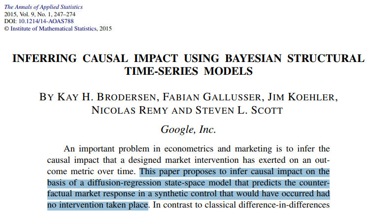
This analysis of interventions in an observational setting uses the idea of potential outcomes (see Rubin Causal Model.
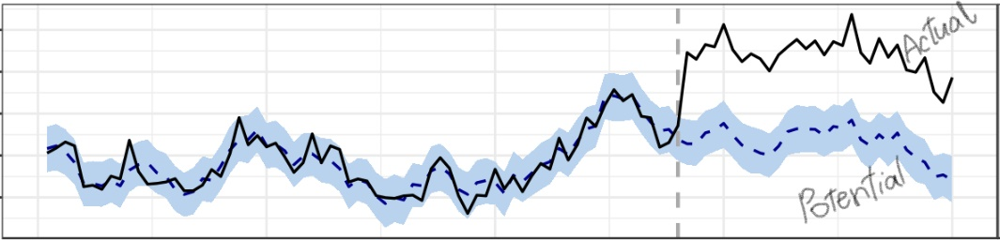
Fit a baseline forecast to predict the counterfactual, i.e., how the response variable would have evolved after the intervention if the intervention had never occurred.
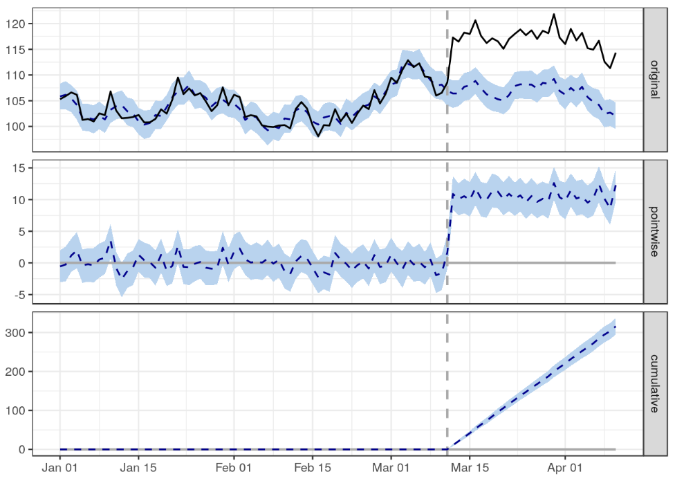
## Posterior inference {CausalImpact}
##
## Average Cumulative
## Actual 117 3511
## Prediction (s.d.) 107 (0.37) 3196 (11.03)
## 95% CI [106, 107] [3174, 3217]
##
## Absolute effect (s.d.) 11 (0.37) 316 (11.03)
## 95% CI [9.8, 11] [294.9, 337]
##
## Relative effect (s.d.) 9.9% (0.35%) 9.9% (0.35%)
## 95% CI [9.2%, 11%] [9.2%, 11%]
##
## Posterior tail-area probability p: 0.001
## Posterior prob. of a causal effect: 99.9%
##
## For more details, type: summary(impact, "report")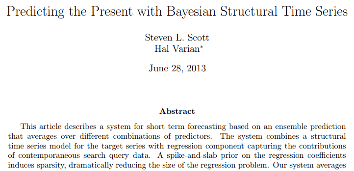
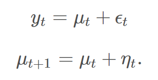
The local level model is a random walk observed with noise
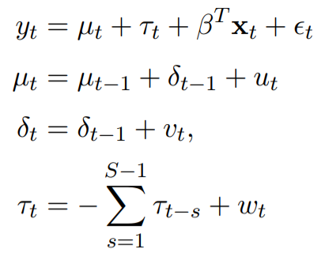
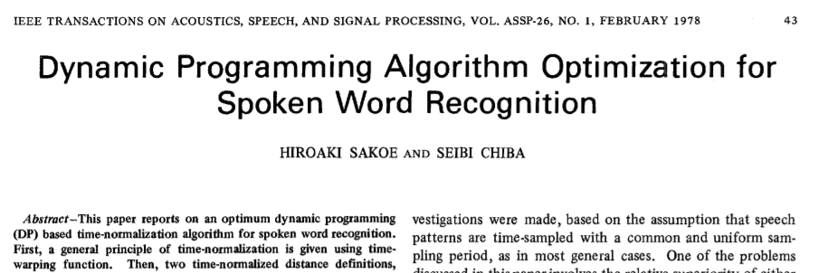
Dynamical Time Warping finds the best alignment between two time series by stretching or compressing them along the time dimension
Find the warping path that minimizes the total distance
dtw along with correlations to cull the list of controls condidatesCausalImpact with some defaults and produces tons of diagnostics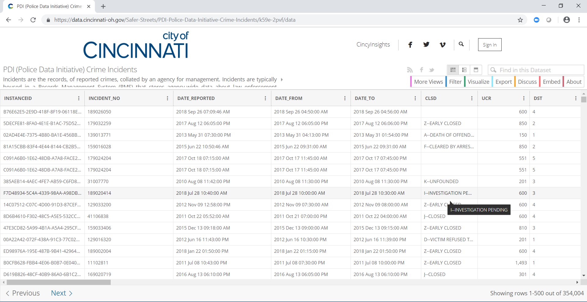
data_file <- "data/crimes.csv"
data_url <- "https://data.cincinnati-oh.gov/api/views/k59e-2pvf/rows.csv?accessType=DOWNLOAD"
# Download data if not already in place
if (!file.exists(data_file)) download.file(data_url, data_file)
# Read in data and count incidents by date
# Filter to 2011 onwards and only for valid neighborhoods
daily <- fread(data_file) %>%
.[, .(incidents = .N)
, .(date = as_date(mdy_hms(DATE_REPORTED)), hood = SNA_NEIGHBORHOOD)] %>%
.[date %between% c('2011-01-01', '2017-12-31') & hood != "N/A", ]Using tsibble, aggregage by year-month and pad to ensure no implicit missing values
monthly <- daily %>%
as_tsibble(., key = id(hood)) %>%
group_by_key(.) %>%
index_by(month = yearmonth(date)) %>%
summarise(incidents = sum(incidents)) %>%
fill_gaps(., incidents = 0L, .full = TRUE)
glimpse(monthly)## Observations: 4,200
## Variables: 3
## Key: hood [50]
## $ hood <chr> "AVONDALE", "AVONDALE", "AVONDALE", "AVONDALE", "AVO...
## $ month <mth> 2011 Jan, 2011 Feb, 2011 Mar, 2011 Apr, 2011 May, 20...
## $ incidents <int> 267, 177, 220, 246, 236, 236, 314, 289, 250, 239, 26...## hood mean N
## 1 AVONDALE 193.333333 84
## 2 BOND HILL 61.476190 84
## 3 CALIFORNIA 3.821429 84
## 4 CAMP WASHINGTON 27.714286 84
## 5 CARTHAGE 40.107143 84
## 6 CLIFTON 54.880952 84
## 7 COLLEGE HILL 108.369048 84
## 8 COLUMBIA TUSCULUM 4.404762 84
## 9 CORRYVILLE 58.523810 84
## 10 CUF 156.940476 84
## 11 DOWNTOWN 139.154762 84
## 12 EAST END 21.238095 84
## 13 EAST PRICE HILL 246.595238 84
## 14 EAST WALNUT HILLS 27.940476 84
## 15 EAST WESTWOOD 26.785714 84
## 16 ENGLISH WOODS 6.523810 84
## 17 EVANSTON 79.226190 84
## 18 HARTWELL 30.583333 84
## 19 HYDE PARK 44.523810 84
## 20 KENNEDY HEIGHTS 25.500000 84
## 21 LINWOOD 19.595238 84
## 22 LOWER PRICE HILL 21.130952 84
## 23 MADISONVILLE 71.416667 84
## 24 MILLVALE 45.202381 84
## 25 MT. ADAMS 13.047619 84
## 26 MT. AIRY 101.654762 84
## 27 MT. AUBURN 63.035714 84
## 28 MT. LOOKOUT 13.178571 84
## 29 MT. WASHINGTON 50.797619 84
## 30 NORTH AVONDALE - PADDOCK HILLS 34.607143 84
## 31 NORTH FAIRMOUNT 26.845238 84
## 32 NORTHSIDE 80.702381 84
## 33 OAKLEY 70.345238 84
## 34 OVER-THE-RHINE 155.833333 84
## 35 PENDLETON 22.869048 84
## 36 PLEASANT RIDGE 42.476190 84
## 37 QUEENSGATE 22.869048 84
## 38 RIVERSIDE 23.630952 84
## 39 ROSELAWN 89.380952 84
## 40 SAYLER PARK 21.142857 84
## 41 SEDAMSVILLE 6.940476 84
## 42 SOUTH CUMMINSVILLE 11.666667 84
## 43 SOUTH FAIRMOUNT 43.547619 84
## 44 SPRING GROVE VILLAGE 35.011905 84
## 45 VILLAGES AT ROLL HILL 31.547619 84
## 46 WALNUT HILLS 125.452381 84
## 47 WEST END 109.678571 84
## 48 WEST PRICE HILL 192.154762 84
## 49 WESTWOOD 332.142857 84
## 50 WINTON HILLS 75.178571 84Most importantly all neighborhoods have the same number of records, since our time series need to be of equal length
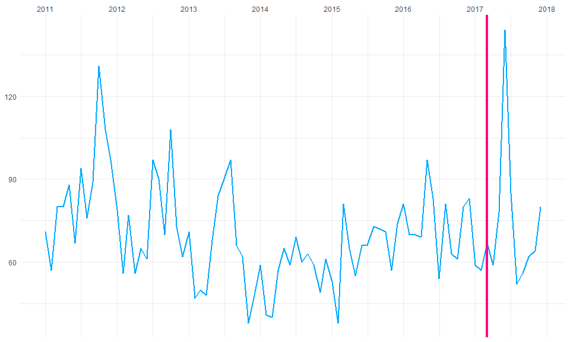
m <- as_tibble(monthly) %>%
best_matches(.,
id_variable = "hood",
date_variable = "month",
matching_variable = "incidents",
markets_to_be_matched = "OAKLEY",
start_match_period = "2011-01-01",
end_match_period = "2017-02-28")
m$BestMatches## hood BestControl RelativeDistance Correlation Length
## 1 OAKLEY BOND HILL 0.2710190 0.4771407 74
## 2 OAKLEY WINTON HILLS 0.2793491 0.4882987 74
## 3 OAKLEY MT. AUBURN 0.2851608 0.3594861 74
## 4 OAKLEY EVANSTON 0.3504456 0.3963057 74
## 5 OAKLEY CORRYVILLE 0.3508330 0.3613581 74
## MatchingStartDate MatchingEndDate rank
## 1 2011 Jan 2017 Feb 1
## 2 2011 Jan 2017 Feb 2
## 3 2011 Jan 2017 Feb 3
## 4 2011 Jan 2017 Feb 4
## 5 2011 Jan 2017 Feb 5proof <- inference(matched_markets = m,
test_market = "OAKLEY",
end_post_period = "2019-01-01")
proof$CausalImpactObject## Posterior inference {CausalImpact}
##
## Average Cumulative
## Actual 75 747
## Prediction (s.d.) 66 (4.7) 662 (47.1)
## 95% CI [57, 76] [569, 756]
##
## Absolute effect (s.d.) 8.5 (4.7) 84.7 (47.1)
## 95% CI [-0.92, 18] [-9.20, 178]
##
## Relative effect (s.d.) 13% (7.1%) 13% (7.1%)
## 95% CI [-1.4%, 27%] [-1.4%, 27%]
##
## Posterior tail-area probability p: 0.041
## Posterior prob. of a causal effect: 95.9%
##
## For more details, type: summary(impact, "report")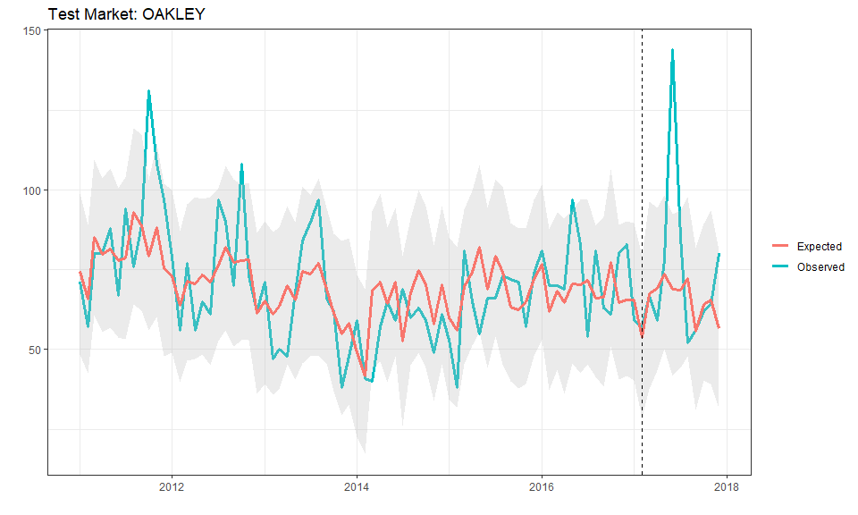
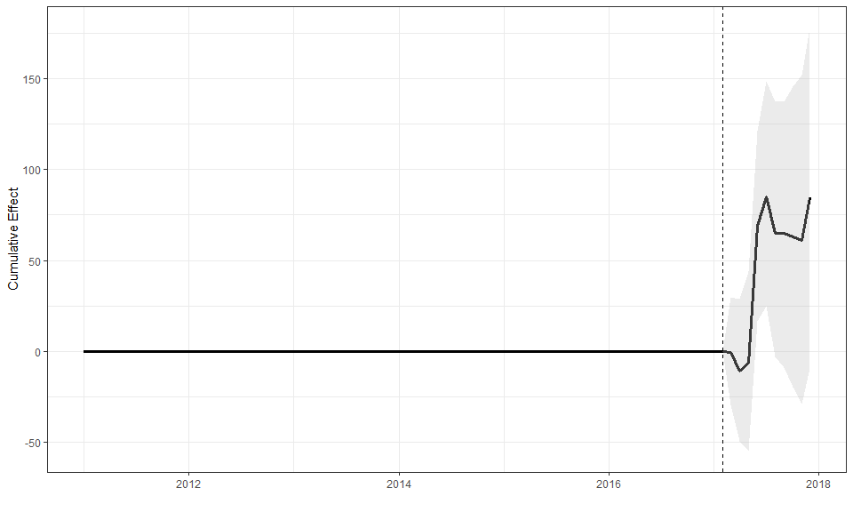
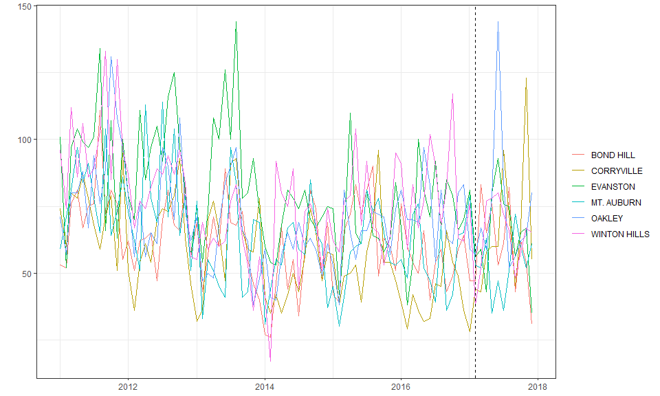
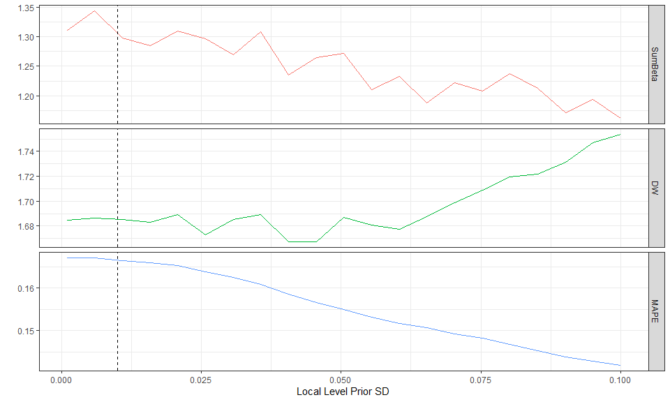